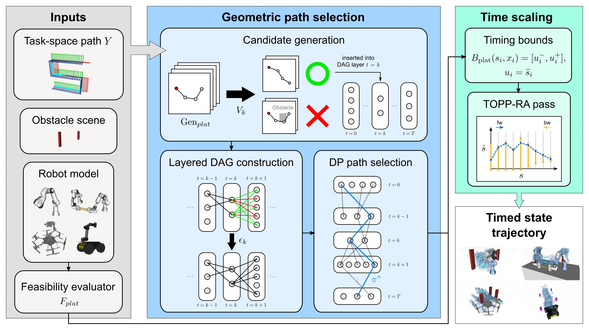
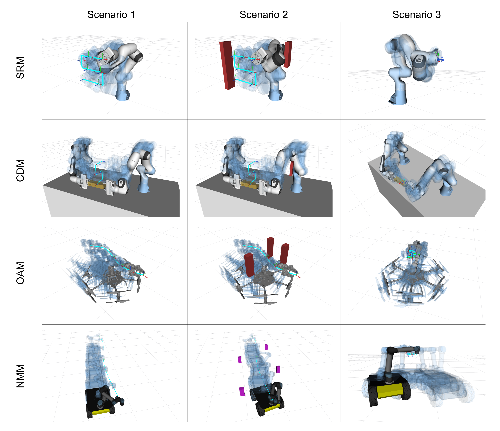
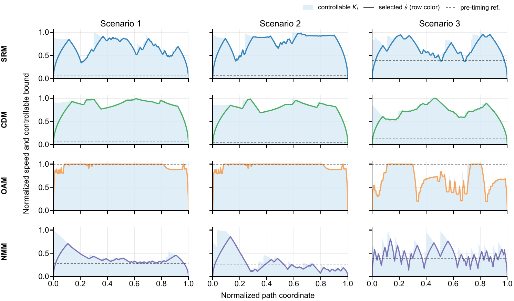
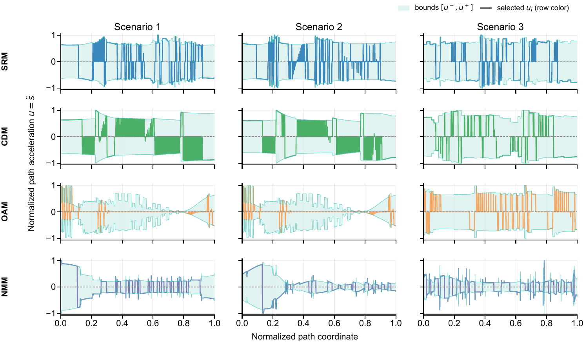

A Graph-Based Planning Framework with Fixed-Path Time Scaling for Redundant Manipulation Systems
Abstract
Redundant manipulation systems following prescribed task-space paths must select among many inverse-kinematics solutions at each waypoint without introducing discontinuous joint-space transitions or violating platform-specific actuation constraints. This paper presents a graph-based trajectory planning framework that addresses this by separating geometric path selection from fixed-path time scaling: multiple IK candidates are generated at each waypoint, a configuration-continuous path is selected by dynamic programming on a layered directed acyclic graph, and a time scaling is then computed for the fixed path. The central result is that sampled fixed-path timing constraints from four structurally distinct platform classes—serial joint torque, cooperative wrench balance, aerial thrust allocation, and nonholonomic wheel-rate and arm-torque limits—each reduce to admissible path-acceleration intervals, enabling a common path-coordinate timing backend to operate without platform-specific modification. The framework is evaluated on twelve representative scenarios spanning the four platform classes, with N = 50 repeated model-based trials per scenario; all trials achieve planning success and pass post-planning simulation across the full scenario set.
Methodology

Pipeline overview. The two stages—geometric path selection and fixed-path time scaling—are bridged by path fixation. Geometric path selection produces a configuration-continuous IK path on a layered DAG; fixed-path time scaling solves a TOPP instance using platform-specific acceleration-bound intervals. The platform evaluator Fplat supplies seven adapter components without touching either stage's shared logic.
Candidate Sets, Static Preview, and Layered DAG
At each task-space waypoint yk, a platform-specific generator Genplat samples a finite candidate set Ck from an IK solver bank (multistart FABRIK + damped least-squares). Each candidate is screened by a node-validity predicate Vk—sampled pose satisfaction, joint or allocation limits, collision clearance, and a static support-wrench or static-torque preview that catches timing-invariant infeasibility before graph inclusion. Adjacent candidates are connected by an edge predicate εk that encodes sampled continuity, velocity bounds, and platform-specific transition constraints (e.g., nonholonomic connectors). A single backward sweep on the resulting layered DAG yields the globally optimal finite-graph path in O(NK2) relaxations; if the terminal reachable set is empty, the planner reports a graph-disconnection failure rather than invoking adaptive resampling.
Common TOPP-RA Backend via Acceleration-Bound Intervals
Once the state path is fixed, finding a feasible schedule is a Time-Optimal Path Parameterization (TOPP) instance. The path is parameterized by arc length s ∈ [0, S], with optimization variables xk = ⋅sk2 and uk = ⋅⋅sk. Platform-specific feasibility enters through an acceleration-bound function Bplat returning, at each grid point, a closed interval [ulo, uhi]. A backward/forward reachability sweep in the path-coordinate variables produces the speed profile along the upper boundary of the controllable set. The four evaluated platform classes share this backend without modification.
Four Constraint Families, One Closed Interval at Each Grid Point
A platform is pipeline-admissible when its sampled fixed-path timing constraints can be written in TOPP-RA standard form Ωi = {(u, x) | aiu + bix + ci ∈ Ci} with Ci closed. Lemmas 1–4 in the paper show that (i) affine RNEA torque chains intersected with per-joint limits (serial), (ii) bilateral cooperative wrench balance distributions (dual-arm), (iii) thrust-allocation zonotopes intersected with a 1D affine path-coordinate line (aerial), and (iv) geometry-conditioned affine bounds after connector path fixation (nonholonomic mobile) each yield a closed acceleration interval at every grid point—so the shared TOPP-RA pass applies without modification.
Seven Adapter Components Plug Into the Shared Scaffold
A new platform is integrated by specifying seven components—state space, task map, candidate generator, node validity, edge predicate, timing-bound model, and planning-model evaluator—while the geometric path selection and time-scaling stages operate unchanged. Four structural adapter patterns recur: product-space candidates for shared-object constraints, implicit-base generation for floating bases derived from arm reachability, auxiliary state for kinematically coupled secondary axes, and connector-lifted edge predicates for non-Euclidean mobility.
Platform Instantiations

Representative scenario visualizations. Rows correspond to SRM, CDM, OAM, and NMM; columns to Scenarios 1–3 in the benchmark suite. Each panel overlays the prescribed task path, sampled target poses, obstacles when present, and ghosted robot states from an accepted timed trajectory.
Serial Redundant Manipulator
A 7-DoF arm with one extra DoF and joint-torque limits. The path-parameterized RNEA torque τ = a(s)u + b(s,x)x + c(s) is affine in u, and each per-joint limit contributes a half-interval whose intersection is a closed interval. Pinocchio supplies the inverse-dynamics evaluation.
Cooperative Dual-Arm Manipulator
Two arms rigidly grasping a shared object. Candidates live on a product configuration space with object-consistency constraints; per-arm torque budgets are coupled through a bilateral wrench-balance solve. Per-arm timing constraints reduce to the same affine coefficient form as the serial case, so the intersection is again a closed interval.
Omnidirectional Aerial Manipulator
Floating-base arm with tilt-rotor propulsion. Base pose is implied by an arm candidate via reverse-chain kinematics. Feasibility requires the path-coordinate body wrench W(s,x,u) ∈ 𝒲(φ), a 1D affine line through a thrust-allocation zonotope—an exact closed interval without convex relaxation.
Nonholonomic Mobile Manipulator
Differential-drive base + onboard arm. The edge predicate selects a kinematically valid bounded-curvature connector (Dubins-style) between consecutive base states; the same parameterization defines base motion for timing. Wheel-rate and acceleration limits combined with sampled arm-torque bounds yield a closed acceleration interval on each connector segment.
Experiments
Cross-Platform Acceptance Benchmark
Twelve scenarios—three per platform class—evaluated with N = 50 repeated trials each. Across all 600 trials, every scenario achieves 100% acceptance under graph connectivity, timing feasibility, fallback-free execution, and post-planning time-domain simulation at Δt = 0.001 s. Maximum task-space tracking error stays below 1 mm in every scenario. The main suite uses TOPP-RA derating α = 0.90 to provide a uniform 10% analytical timing margin.
| Platform | Scenario 1 | Scenario 2 | Scenario 3 | ||||||
|---|---|---|---|---|---|---|---|---|---|
| Time (s) | Succ. | Pos. err. (mm) | Time (s) | Succ. | Pos. err. (mm) | Time (s) | Succ. | Pos. err. (mm) | |
| SRM | 1.577 ± 0.007 | 100% | 0.998 | 1.401 ± 0.006 | 100% | 0.998 | 0.852 ± 0.007 | 100% | 0.994 |
| CDM | 2.626 ± 0.096 | 100% | 0.496 | 5.232 ± 0.172 | 100% | 0.373 | 2.446 ± 0.051 | 100% | 0.683 |
| OAM | 0.988 ± 0.009 | 100% | 0.004 | 1.315 ± 0.089 | 100% | 0.004 | 0.728 ± 0.006 | 100% | 0.073 |
| NMM | 0.874 ± 0.024 | 100% | 0.967 | 1.101 ± 0.034 | 100% | 0.839 | 1.368 ± 0.078 | 100% | 0.928 |
Timing Profile Diagnostics
One accepted trial per scenario, visualizing the path-coordinate timing problem solved by the shared backend. Below: selected fixed-path speed profile against the controllable upper bound Ki. Speed is normalized within each panel; rows correspond to platform class and columns to Scenarios 1–3.

Local path-acceleration intervals for the same accepted trials. The shaded band is the admissible interval [ui−, ui+] induced by the platform-specific feasibility model; the curve is the selected TOPP-RA acceleration ui = ⋅⋅si.

Pipeline Component Ablations
Each ablation removes or weakens one planning-stage element while keeping the downstream timing and post-planning simulation semantics fixed. Bypassing node validity in OAM S3 makes the timing problem TOPP-infeasible; replacing TOPP-RA with structural fixed timing in NMM S2 yields torque utilization above 3× the limit; and weakening the nonholonomic connector predicate in NMM S2 produces torque utilization 0.91 > α. All ablated cases produce zero accepted trials out of ten.
| Element | Case | Failure metric | Value | Accepted |
|---|---|---|---|---|
| Node validity | OAM S3 | TOPP status | infeasible | 0/10 |
| Fixed-path timing | NMM S2 | Torque util. | 3.15 | 0/10 |
| Edge predicate | NMM S2 | Torque util. | 0.91 > α | 0/10 |
Experimental Setup
All experiments run on an AMD Ryzen 5 7500F CPU (12 threads, 30 GiB RAM) with an NVIDIA GeForce RTX 5070 GPU on Ubuntu 22.04.5 LTS. The implementation uses Python 3.10, NumPy 1.26, SciPy 1.15, and Pinocchio 3.9 (ROS 2 Humble) for rigid-body dynamics. Candidate generation, node validity, edge feasibility, and DAG relaxation use platform-specific native or GPU batch backends where enabled; path-coordinate interval construction and the backward/forward reachability sweep run on CPU. Reported wall times measure task-level planning through accepted schedule construction and exclude the post-planning simulation pass.